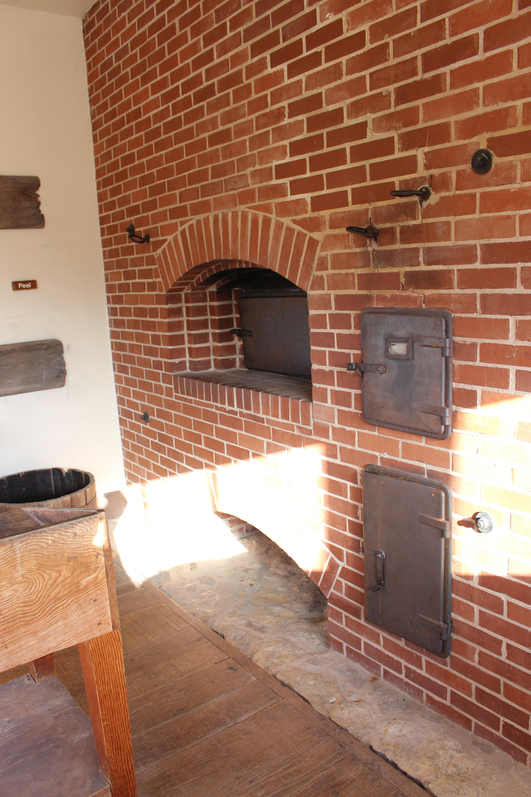

- 


Donuts have been around for many years and even Van Gogh saw the beauty that they possess

It's not procastinating if you're drinking coffee,...it's procaffination

Donuts have been around for many years and even Van Gogh saw the beauty that they possess
It's not procastinating if you're drinking coffee,...it's procaffination
In 1971, Melvin Furballski founded a bakery in Champaign, Illinois, a full year after he landed in New York, with only one hundred dollars to his name. He had decided to buy an abandoned bakery. I the mid-1980's there was a humungous fire that destroyed most of the recorde ... but not the recipes. Instead of giving up, he used this as an opprtunity to remodel.

Donut Delights
2112 Main Street Urbana, Illinois 61801
(217)-555-1234
Email: contact@donutdelights.com